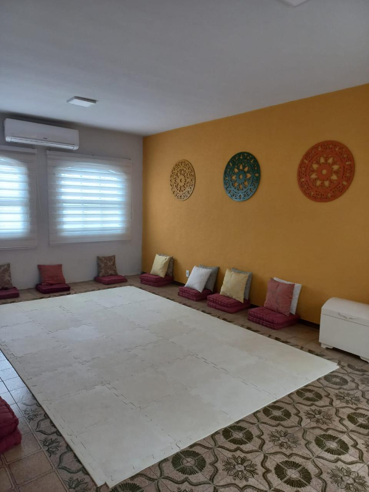
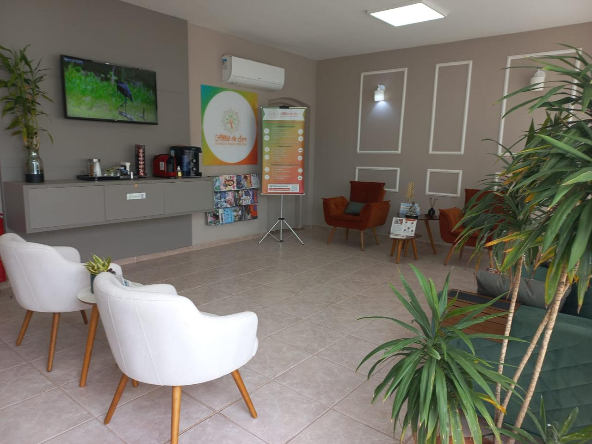

Um espaço de saúde e bem-estar localizado em Americana – São Paulo.
Nossa missão é oferecer um ambiente terapêutico voltado à prevenção de doenças e ao cuidado com a saúde integral.
No coração do Ateliê está o compromisso com o ser humano por inteiro — corpo, mente, alma e emoções.
Acreditamos em uma abordagem holística, sistêmica e integrativa, onde cada pessoa é acolhida de forma única, respeitando sua história e necessidades.

Nossos profissionais dedicam-se a criar vínculos terapêuticos sólidos, com responsabilidade técnica, ética e presença.
A escuta acolhedora é a base do nosso trabalho — um espaço seguro onde você pode compartilhar sua jornada com respeito e confiança.
Oferecemos uma diversidade de práticas terapêuticas, como Psicoterapia Sistêmica, Psicanálise, Constelação Familiar, Psicologia Pré e Perinatal, Renascimento, Acupuntura, Reflexoterapia, Microfisioterapia, Terapia Manual Evolutiva (TME), Massagem Relaxante, Reiki, Florais de Bach, Terapia Energética e Yoga.

Os atendimentos podem ser individuais ou em grupo, presenciais ou online, permitindo que você escolha o que faz mais sentido para o seu momento.
No Ateliê do Ser, tradição e inovação caminham juntas. Aqui você é convidado a escolher com liberdade e consciência o seu caminho de autocuidado.
Mais do que serviços, criamos um espaço onde você pode se sentir acolhido e seguro para ser quem é.
Venha fazer parte de uma comunidade que valoriza o bem-estar integral e o desenvolvimento pessoal.
Ateliê do Ser